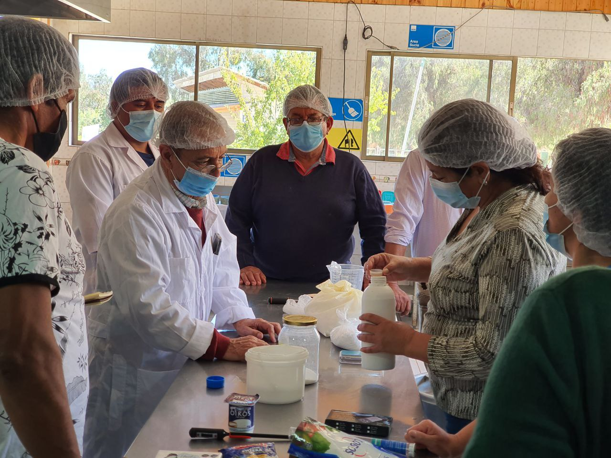

Hasta ahora, los productores se habían focalizado en cursos, talleres y seminarios en modalidad virtual, donde abordaron diferentes temáticas como el manejo genético, la calidad de la leche y las opciones de alimentación para planteles caprinos.

Continuar con la entrega de conocimientos en aspectos teóricos y prácticos es el objetivo del nuevo curso de capacitación «Elaboración de queso de cabra 2022», el cual está siendo organizado por el programa Transforma Caprino de Corfo, con la activa colaboración de la Municipalidad de Monte Patria y de Canela y del Instituto de Desarrollo Agropecuario (Indap), a través de los equipos Prodesal- Padis. El ciclo de cinco talleres comenzó con una charla virtual dirigida a productores y personas en general, los siguientes dos talleres fueron realizados de manera completamente presencial en las comunas de Monte Patria y Canela, a cargo de Manuel Zamora y el profesor Juvenal Cortés.
Víctor Rivera, médico veterinario de la Agencia Chilena para la Inocuidad y Calidad Alimentaria (ACHIPIA), dictó el taller online de inocuidad alimentaria y explicó a los productores queseros la importancia del aseguramiento de calidad de los productos lácteos, los riesgos durante el proceso de cosecha de materia prima y por qué son importantes los registros en la mantención de la calidad e identificación de los problemas.
A propósito del taller, el profesional indicó que «actualmente, existe un gran interés por parte de los productores caprinos por estos temas. Ellos comprenden la importancia de la inocuidad y el porqué de las reglamentaciones en torno a esto, por ende, es muy bueno para ellos seguir avanzando y potenciar aún más la comercialización de sus productos, ese es el objetivo. Un programa como el Transforma Caprino es de gran relevancia en la región, debido a la gran presencia de capricultores en esta zona y donde sabemos que existen grandes brechas, principalmente en infraestructura que, por ser zonas rurales, muchas veces se dificulta el acceso al agua potable, alcantarillado u otros elementos relevantes para una actividad productiva».
Los cursos desarrollados han tenido una muy buena acogida, participando alrededor de 30 personas por limitantes de aforo. Han adquirido nuevos conocimientos y compartido diferentes experiencias entre ellos, lo que es muy positivo por la creación de lazos y redes de cooperación.
Uno de los asistentes fue Nibaldo Olivares, participante del programa Transforma Caprino, cuya quesería se encuentra en El Palqui, comuna de Monte Patria, quien expresó que «este curso ha sido muy positivo para nosotros ya que nos ha permitido aprender a hacer otro tipo de quesos, distintos al que ya realizamos; además, nos han enseñado cómo mantener y asegurar la inocuidad en nuestros productos. Por otra parte, podemos conocer la experiencia de otros productores que van más avanzados».
De la misma manera, Román Valdés, de Flor del Valle, Monte Patria, señaló que «han sido un aporte muy grande todos estos cursos. Dentro de la producción de queso existen muchas técnicas de elaboración y siempre es positivo aprender formas distintas de hacer este producto, uno nunca deja de aprender. Poder compartir con compañeros que van más adelante que nosotros es una forma de enriquecer nuestra actividad, por eso estamos agradecidos con el programa Transforma Caprino, porque nos da estas oportunidades».
Los talleres restantes se seguirán desarrollando de manera presencial en Canela y Monte Patria, donde se busca abordar técnicas de elaboración de quesos gourmet, cómo llevar a cabo un análisis sensorial de los quesos y conocer las bases del maridaje con distintos productos. Este curso finalizará en el mes de abril con una ceremonia de cierre donde se certificará a cada uno de los productores que participaron.
Ingrid Haselbauer, médico veterinario y gerente del programa transforma caprino, expresó que «este curso es un poco más largo que otros que hemos realizado, ya que quisimos abordar desde temas básicos hasta técnicas más complejas. Además, vamos a terminar con un taller sensorial, cosa que no habíamos hecho antes y que pretende entregar a los empresarios herramientas para hacer una venta entretenida e informada contando cómo, cuándo y con que se consumen estos quesos. Este es uno de nuestros cursos más completos ya que aborda la producción quesera de manera integral y la alta participación que hemos tenido nos motiva a continuar».
Rodrigo Gutiérrez, coordinador regional del Programa de Zonas Rezagadas, señaló que «el Programa Transforma Caprino viene justamente a contribuir con formaciones y capacitaciones de alto nivel a nuestros productores, de manera de disminuir las brechas que existen en términos de conectividad, conocimientos o comercialización, y sobre todo en las comunas que hoy estamos abordando. La valoración nuestra y de los mismos productores es muy buena con respecto a estas instancias de entregas de conocimiento y creemos que este debe ser el motor que impulse esta actividad ancestral».
Transforma Caprino es un programa de Corfo, financiado por el Gobierno Regional, a través del Programa Gestión Territorial de Zonas Rezagadas, que busca impulsar la cadena de valor del rubro caprino. Actualmente, está focalizado en las comunas de Punitaqui, Monte Patria, Combarbalá, Canela, entre otras. Para más información, es posible visitar sus redes sociales, en Facebook, Instagram y Twitter.